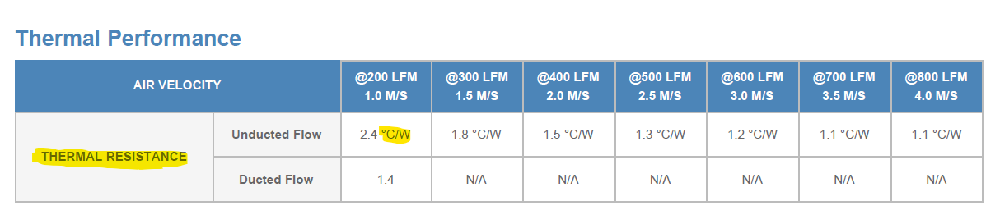
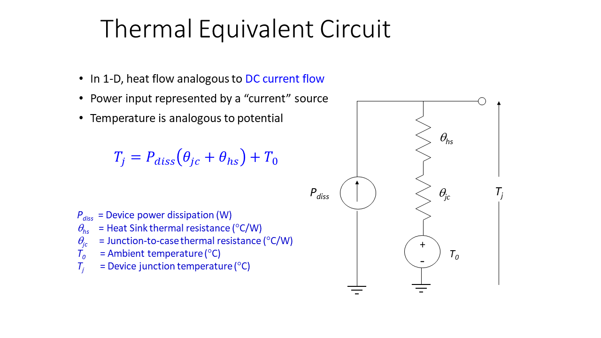

Power and Heat Lab
Author: Tim Brothers
PDF VersionIntroduction¶
In this lab, you will examine the power requirements of a system and the associated heat disipation requirements.
You will examine a modern chipset and estimate the heat disipation requirements for the chip. Finally you are going specify a heat sink for the chiip based on the heat requirements.
The files you need for this assignment are found in the zip file: assignment.zip
Procesor Power¶
Examine the data sheet for the Intel 12th Generation CPU and determine the following values for the P-Processor Line: 1. The thermal trip temperature in degrees C. This is the temerature at which the processor will shut down to avoid damage. 2. The maximum power consumption. There are several power measurements, but when desinging for thermal you should take the worst case into consideration. Find the maximum power consumption as assured by the data sheet. 3. The size of the physical chip. To size a heat sink the surface area of the heat sink must be in contact with the chip for optional heat transfer.
Size the Heat Sink¶
The heat sink can be sized based on the power dissipated. An approximation can be used to get a general idea of the size reqiured using the web site below:
The background on this equation can be found here:
Assume: Room temperature is 25C.
After you find the approximate diminsions of your heat sink, search the internet and find a heat sink that will work. Please note your heat sink must have a data sheet. An example data sheet can be found in the zip file assignment.zip.
Specifically we are looking for a heat sink with specific Thermal Resistances at different fan speeds.

Thermal Circuit¶
Using the actual heat sink create a Thermal Circuit to make sure the system will operate.

Assume: That Θjc is 4.33 C/W.
What is the maximum power for heat disipation given your selected heat sink and air flow rate?